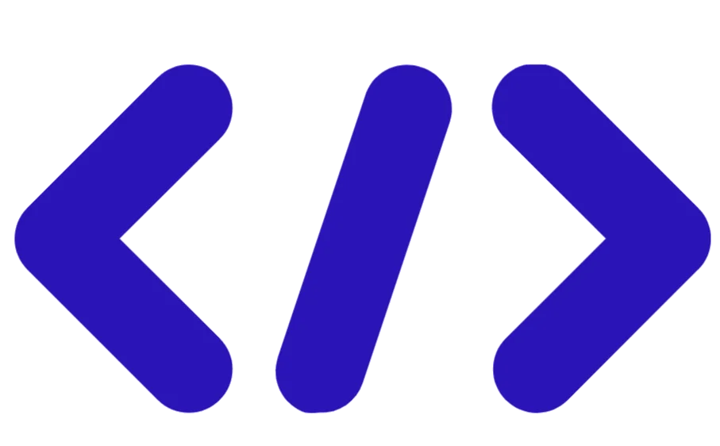
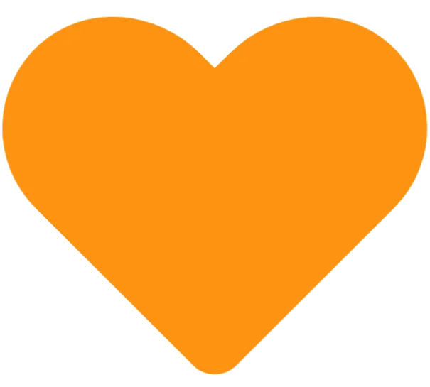
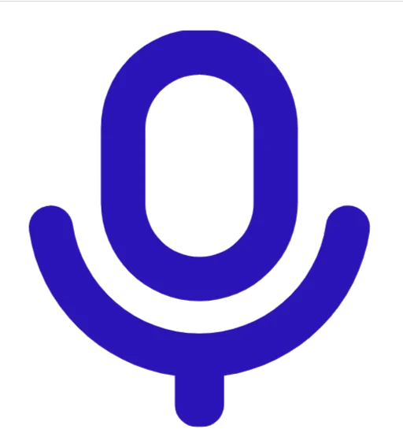

Concept Snake : le serpent grandit lorsqu'il mange un fruit. Le score augmente et une nouvelle ressource apparaît sur le plateau.
Jeu C++ / SDL2
Snaketris est un jeu hybride entre Snake et Tetris. Le joueur dirige un serpent, récupère des fruits, augmente son score et utilise des mécaniques basées sur les couleurs de ses anneaux.

Concept Snake : le serpent grandit lorsqu'il mange un fruit. Le score augmente et une nouvelle ressource apparaît sur le plateau.

Règle Tetris : lorsque trois anneaux consécutifs possèdent la même couleur, celui du milieu disparaît automatiquement.

Objectif : maîtriser la programmation modulaire en C++ et la bibliothèque graphique SDL2.